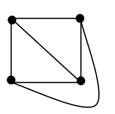
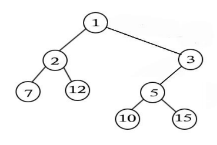

| 1. | 在二进制下，1011001 + （ ）= 1100110。 |
|---|
| 2. | 字符“A”的 ASCII 码为十六进制 41，则字符“Z”的 ASCII 码为十六进制的（ ）。 |
|---|
| 3. | 下图是一棵二叉树，它的先序遍历是（ ）。 |
|---|
|
|
| 4. | 寄存器是（ ）的重要组成部分。 |
|---|
| 5. | 广度优先搜索时，需要用到的数据结构是（ ）。 |
|---|
| 6. | 在使用高级语言编写程序时，一般提到的“空间复杂度”中的空间是指（ ）。 |
|---|
| 7. | 应用快速排序的分治思想，可以实现一个求第 K 大数的程序。假定不考虑极端的最坏情况，理论上可 以实现的最低的算法时间复杂度为（ ）。 |
|---|
| 8. | 为解决 web应用中的不兼容问题，保障信息的顺利流通，（ ）制定了一系列标准，涉及 HTML、 XML、CSS 等，并建议开发者遵循。 |
|---|
| 9. | 体育课的铃声响了，同学们都陆续的奔向操场，按老师的要求从高到低站成一排。每个同学按顺序来 到操场时，都从排尾走到排头，找到第一个比自己高的同学，并站在他的后面。这种站队的方法类似于（ ） 算法。 |
|---|
| 10. | 1956 年（ ）授予肖克利（William Shockley）、巴丁（John Bardeen）和布拉顿（Walter Brattain）。 |
|---|
| 1. | 如果根结点的深度记为 1，则一棵恰有 2011 个叶子结点的二叉树的深度可能是 （ ）。 |
|---|
|
|
| 2. | 在布尔逻辑中，逻辑“或”的性质有（ ）。 |
|---|
| 3. | 一个正整数在十六进制下有 100 位，则它在二进制下可能有（ ）位。 |
|---|
| 4. | 汇编语言（ ）。 |
|---|
| 5. | 现有一段文言文，要通过二进制哈夫曼编码进行压缩。简单起见，假设这段文言文只由 4 个汉字“之”、 “乎”、“者”、“也”组成，它们出现的次数分别为 700、600、300、400。那么，“也”字的编码长度 可能是（ ）。 |
|---|
| < |
| 6. | 生物特征识别，是利用人体本身的生物特征进行身份认证的一种技术。目前，指纹识别、虹膜识别、 人脸识别等技术已广泛应用于政府、银行、安全防卫等领域。以下属于生物特征识别技术及其应用的是 （ ）。 |
|---|
| 7. | 对于序列“7、5、1、9、3、6、8、4”，在不改变顺序的情况下，去掉（ ）会使逆序对的个数减少 3。 |
|---|
| 8. | 计算机中的数值信息分为整数和实数（浮点数）。实数之所以能够表示很大或者很小的数，是由于使 用了（ ）。 |
|---|
| 9. | 对右图使用 Dijkstra 算法计算 S 点到其余各点的最短路径长度时，到 B 点的距离 d[B]初始时赋为 8，在 算法的执行过程中还会出现的值有（ ）。 |
|---|
| 10. | 为计算机网络中进行数据交换而建立的规则、标准或约定的集合称为网络协议。在下列英文缩写中，（ ） 是网络协议。 |
|---|
| 1. | 平面图可以在画在平面上，且它的边仅在顶点上才能相交的简单无向图。4 个 顶 点的平面图至少有 6 条边，如右图所示。那么，5 个顶点的平面图至少有 条 。 |  |
|---|
| 2. | 定义一种字符串操作，一次可以将其中一个元素移到任意位置。举例说明，对 于字 符串“BCA”可以将 A 移到 B 之前，变字符串“ABC”。如果要将字符串“DACHEBGIF”变成“ABCDEFGHI” 最少需要次操作。 |
|---|
| 1. |
#include<iostream>
#include<cstring>
using namespace std;
const int SIZE = 100;
int main()
{
int n,i,sum,x,a[SIZE];
cin>>n;
memset(a,0,sizeof(a));
for(i=1;i<=n;i++){
cin>>x;
a[x]++;
}
i=0;
sum=0;
while(sum<(n/2+1)){
i++;
sum+=a[i];
}
cout<<i<<endl;
return 0;
}
|
|---|---|
输入：11 4 5 6 6 4 3 3 2 3 2 1 | |
| 输出： |
| 2. |
#include<iostream>
using namespace std;
int n;
void f2(int x,int y);
void f1(int x,int y)
{
if(x<n)
f2(y,x+y);
}
void f2(int x,int y)
{
cout<<x<<' ';
f1(y,x+y);
}
int main()
{
cin>>n;
f1(0,1);
return 0;
return 0;
}
|
|---|---|
| 输入：30 | |
| 输出： |
| 3. |
#include<iostream>
using namespace std;
const int V=100;
int n,m,ans,e[V][V];
bool visited[V];
void dfs(int x,int len)
{
int i;
visited[x]= true;
if(len>ans)
ans=len;
for(i=1;i<=n;i++)
if( (!visited[i]) && (e[x][i]!=-1) )
dfs(i,len+e[x][i]);
visited[x]=false;
}
int main()
{
int i,j,a,b,c;
cin>>n>>m;
for(i=1;i<=n;i++)
for(j=1;j<=m;j++)
e[i][j]=-1;
for(i=1;i<=m;i++)
{
cin>>a>>b>>c;
e[a][b]=c;
e[b][a]=c;
}
for(i=1;i<=n;i++)
visited[i]=false;
ans=0;
for(i=1;i<=n;i++)
dfs(i,0);
cout<<ans<<endl;
return 0;
}
|
|---|---|
输入：4 6 1 2 10 2 3 20 3 4 30 4 1 40 1 3 50 2 4 60 | |
| 输出： |
| 4. |
#include<iostream>
#include<cstring>
#include<string>
using namespace std;
const int SIZE=10000;
const int LENGTH=10;
int n,m,a[SIZE][LENGTH];
int h(int u,int v)
{
int ans,i;
ans=0;
for(i=1;i<=n;i++)
if( a[u][i]!=a[v][i])
ans++;
return ans;
}
int main()
{
int sum,i,j;
cin>>n;
memset(a,0,sizeof(a));
m=1;
while(1)
{
i=1;
while( (i<=n) && (a[m][i]==1) )
i++;
if(i>n)
break;
m++;
a[m][i]=1;
for(j=i+1;j<=n;j++)
a[m][j]=a[m-1][j];
}
sum=0;
for(i=1;i<=m;i++)
for(j=1;j<=m;j++)
sum+=h(i,j);
cout<<sum<<endl;
return 0;
}
|
|---|---|
| 输入：7 | |
| 输出： |
| 1. |
.(大整数开方) 输入一个正整数 n（1≤n≤10100），试用二分法计算它的平方根的整数部分。 |
|---|
#include<iostream>
#include<string>
using namespace std;
const int SIZE=200;
struct hugeint{
int len,num[SIZE];
};
//其中 len 表示大整数的位数；num[1]表示个位，num[2]表示十位，以此类推
hugeint times(hugeint a,hugeint b)
// 计算大整数 a 和 b 的乘积
{
int i,j;
hugeint ans;
memset(ans.num,0,sizeof(ans.num));
for(i=1;i<=a.len;i++)
for(j=1;j<=b.len;j++)
for(i=1;i<=a.len+b.len;i++){
ans.num[i+1]+=ans.num[i]/10;
;
}
if(ans.num[a.len+b.len]>0)
ans.len=a.len+b.len;
else
ans.len=a.len+b.len-1;
return ans;
}
hugeint add(hugeint a,hugeint b)
//计算大整数 a 和 b 的和
{
int i;
hugeint ans;
memset(ans.num,0,sizeof(ans.num));
if(a.len>b.len)
ans.len=a.len;
else
ans.len=b.len;
for(i=1;i<=ans.len;i++){
ans.num[i]+= ;
ans.num[i+1]+= ans.num[i]/10;
ans.num[i]%=10;
}
if(ans.num[ans.len+1]>0)
ans.len++;
return ans;
}
hugeint average(hugeint a,hugeint b)
//计算大整数 a 和 b 的平均数的整数部分
{
int i;
hugeint ans;
ans=add(a,b);
for(i=ans.len;i>=2;i--){
ans.num[i-1]+=( )*10;
ans.num[i]/=2;
}
ans.num[1]/=2;
if(ans.num[ans.len]==0)
ans.len--;
return ans;
}
hugeint plustwo(hugeint a)
// 计算大整数 a 加 2 之后的结果
{
int i;
hugeint ans;
ans=a;
ans.num[1]+=2;
i=1;
while( (i<=ans.len)&&(ans.num[i]>=10) ){
ans.num[i+1]+=ans.num[i]/10;
ans.num[i]%=10;
i++;
}
if(ans.num[ans.len+1]>0)
;
return ans;
}
bool over(hugeint a,hugeint b)
// 若大整数 a>b 则返回 true，否则返回 false
{
int i;
if( )
return false;
if( a.len>b.len )
return true;
for(i=a.len;i>=1;i--){
if(a.num[i] |
| 2. |
.（笛卡尔树） 对于一个给定的两两不等的正整数序列，笛卡尔树是这样的一棵二叉树：首先，它是一个
最小堆，即除了根结点，每个节点的权值都大雨父节点的权值；其次，它的中序遍历恰好就是给定的序列。
例如，对于序列 7、2、12、1、10、5、15、3，下图就是一棵对应的笛卡尔树。现输入序列的规模 n（1≤n<100）
和序列的 n 个元素，试求其对应的笛卡尔树的深度 d（根节点深度为 1），以及有多少个叶子节点的深度为
d。 |
|---|
|  |
#include<iostream>
using namespace std;
const int SIZE=100+5;
const int INFINITY=1000000;
int n,a[SIZE],maxDeep,num;
void solve(int left,int right,int deep)
{
int i,j,min;
if(deep>maxDeep){
maxDeep=deep;
num=1;
}
else if(deep==maxDeep)
;
min= INFINITY;
for(i=left;i<=right;i++)
if(min>a[i]){
min=a[i];
;
}
if(left |